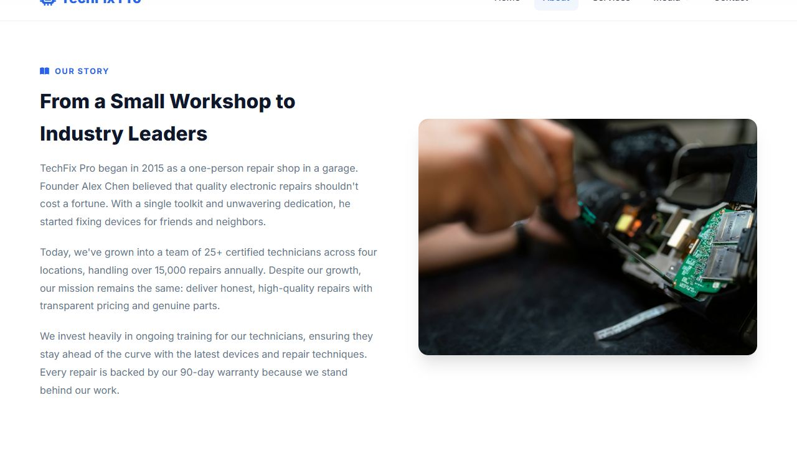
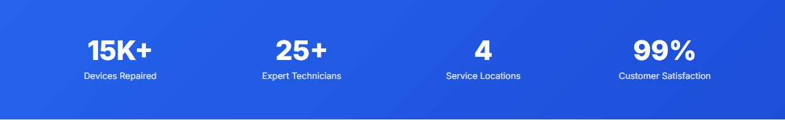
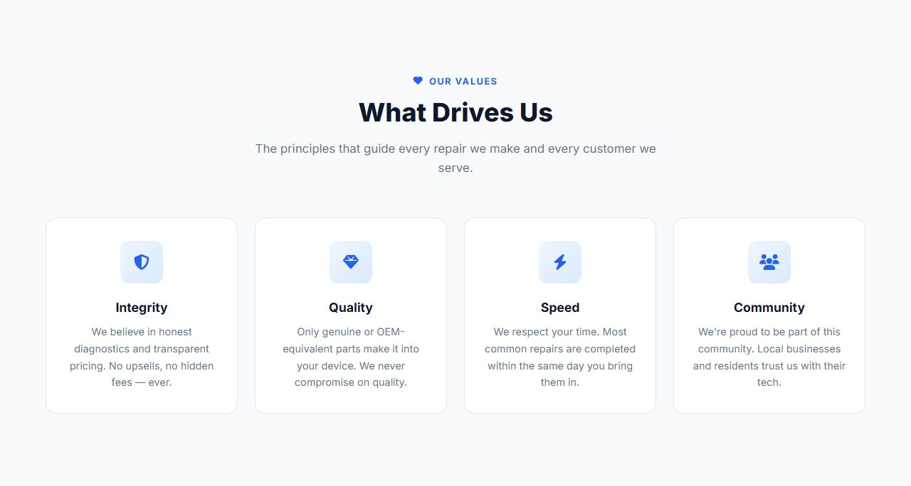

Lesson 14 · Building the Pages
The About Page
The About page tells TechFix Pro's story. You will reuse lots of what you've already learned (grids, cards, section headers) and use the shared page header for the first time.
- About 50 minutes
- Edits:
about.html
By the end of this lesson you will be able to
- Reuse shared components (page header, section header, container) on a new page.
- Build 4-column grids that shrink to 2 and then 1 column.
- Write compact one-line CSS rules.
The routine for every page
From now on each page follows the same routine. Open the page file. Delete <!-- PAGE CONTENT GOES HERE --> and the /* Page-specific styles go here */ comment. Then add each section's HTML directly above <!-- Footer -->, and each piece of CSS just above </style>.
Add the page header
Open about.html. Delete the line <!-- PAGE CONTENT GOES HERE --> and, in its place (between the navbar and the footer), add:
</nav> and <!-- Footer --><header class="page-header">
<div class="container">
<h1 class="fade-in">About TechFix Pro</h1>
<p class="fade-in stagger-1">A decade of excellence in electronic repair, driven by passion and precision.</p>
<div class="breadcrumbs fade-in stagger-2">
<a href="index.html">Home</a> <i class="fas fa-chevron-right"></i> About
</div>
</div>
</header>No new CSS needed: you wrote .page-header and .breadcrumbs in styles.css back in Lesson 6. Save and look:
The breadcrumb's fa-chevron-right icon draws the small arrow between “Home” and “About”.
Add “Our Story”
HTML, directly above <!-- Footer -->:
<!-- Footer --><section class="story">
<div class="container">
<div class="story-grid">
<div class="story-content fade-in">
<div class="overline"><i class="fas fa-book-open"></i> Our Story</div>
<h2>From a Small Workshop to Industry Leaders</h2>
<p>TechFix Pro began in 2015 as a one-person repair shop in a garage. Founder Alex Chen believed that quality electronic repairs shouldn't cost a fortune. With a single toolkit and unwavering dedication, he started fixing devices for friends and neighbors.</p>
<p>Today, we've grown into a team of 25+ certified technicians across four locations, handling over 15,000 repairs annually. Despite our growth, our mission remains the same: deliver honest, high-quality repairs with transparent pricing and genuine parts.</p>
<p>We invest heavily in ongoing training for our technicians, ensuring they stay ahead of the curve with the latest devices and repair techniques. Every repair is backed by our 90-day warranty because we stand behind our work.</p>
</div>
<div class="story-image fade-in stagger-2">
<img src="https://images.unsplash.com/photo-1581092918056-0c4c3acd3789?w=700&h=500&fit=crop" alt="Our workshop" loading="lazy">
</div>
</div>
</div>
</section>CSS, in the <style> block (delete the placeholder comment first):
<style> block.story { padding: 100px 0; background: var(--white); }
.story-grid { display: grid; grid-template-columns: 1fr 1fr; gap: 4rem; align-items: center; }
.story-content h2 { font-size: 2rem; font-weight: 800; margin-bottom: 1rem; }
.story-content p { color: var(--gray); line-height: 1.8; margin-bottom: 1.25rem; }
.story-image img { width: 100%; border-radius: var(--radius-lg); box-shadow: var(--shadow-lg); object-fit: cover; height: 380px; }This is the same two-column idea as the Home page's about section. Each rule is written on one line, which is common for short rules. It works exactly the same as spreading it over several lines.

Add the stats bar
HTML, directly above <!-- Footer -->:
<!-- Footer --><section class="stats-bar">
<div class="container">
<div class="stats-grid">
<div class="stat-item fade-in">
<span class="number">15K+</span>
<div class="label">Devices Repaired</div>
</div>
<div class="stat-item fade-in stagger-1">
<span class="number">25+</span>
<div class="label">Expert Technicians</div>
</div>
<div class="stat-item fade-in stagger-2">
<span class="number">4</span>
<div class="label">Service Locations</div>
</div>
<div class="stat-item fade-in stagger-3">
<span class="number">99%</span>
<div class="label">Customer Satisfaction</div>
</div>
</div>
</div>
</section>CSS, in the <style> block:
<style> block, below the previous CSS.stats-bar {
padding: 60px 0;
background: linear-gradient(135deg, var(--primary) 0%, var(--primary-dark) 100%);
color: var(--white);
}
.stats-grid { display: grid; grid-template-columns: repeat(4, 1fr); gap: 2rem; text-align: center; }
.stat-item .number { font-size: 2.75rem; font-weight: 800; display: block; line-height: 1; }
.stat-item .label { font-size: 0.9rem; opacity: 0.85; margin-top: 0.5rem; }A blue gradient band with four equal columns. color: var(--white) on the section makes all the text inside white; line-height: 1 on the numbers removes the extra space above and below them.

Add “Our Values”
HTML, directly above <!-- Footer -->:
<!-- Footer --><section class="values">
<div class="container">
<div class="section-header fade-in">
<div class="overline"><i class="fas fa-heart"></i> Our Values</div>
<h2>What Drives Us</h2>
<p>The principles that guide every repair we make and every customer we serve.</p>
</div>
<div class="values-grid">
<div class="value-card fade-in stagger-1">
<div class="value-icon"><i class="fas fa-shield-alt"></i></div>
<h3>Integrity</h3>
<p>We believe in honest diagnostics and transparent pricing. No upsells, no hidden fees — ever.</p>
</div>
<div class="value-card fade-in stagger-2">
<div class="value-icon"><i class="fas fa-gem"></i></div>
<h3>Quality</h3>
<p>Only genuine or OEM-equivalent parts make it into your device. We never compromise on quality.</p>
</div>
<div class="value-card fade-in stagger-3">
<div class="value-icon"><i class="fas fa-bolt"></i></div>
<h3>Speed</h3>
<p>We respect your time. Most common repairs are completed within the same day you bring them in.</p>
</div>
<div class="value-card fade-in stagger-4">
<div class="value-icon"><i class="fas fa-users"></i></div>
<h3>Community</h3>
<p>We're proud to be part of this community. Local businesses and residents trust us with their tech.</p>
</div>
</div>
</div>
</section>CSS:
<style> block, below the previous CSS.values { padding: 100px 0; background: var(--light); }
.values-grid { display: grid; grid-template-columns: repeat(4, 1fr); gap: 1.5rem; }
.value-card {
background: var(--white);
border-radius: var(--radius-lg);
padding: 2rem 1.5rem;
text-align: center;
border: 1px solid var(--border);
transition: var(--transition);
}
.value-card:hover { transform: translateY(-6px); box-shadow: var(--shadow-lg); border-color: transparent; }
.value-icon { width: 60px; height: 60px; background: linear-gradient(135deg, #eff6ff, #dbeafe); border-radius: var(--radius); display: flex; align-items: center; justify-content: center; margin: 0 auto 1.25rem; font-size: 1.4rem; color: var(--primary); }
.value-card h3 { font-size: 1.1rem; font-weight: 700; margin-bottom: 0.5rem; }
.value-card p { color: var(--gray); font-size: 0.9rem; line-height: 1.65; }These cards are a smaller version of the Home page service cards. The icon box uses the same light blue gradient, centred with margin: 0 auto 1.25rem (0 top, auto left/right, 1.25rem bottom).

Add “Meet Our Experts”
HTML, directly above <!-- Footer -->:
<!-- Footer --><section class="team">
<div class="container">
<div class="section-header fade-in">
<div class="overline"><i class="fas fa-user-friends"></i> The Team</div>
<h2>Meet Our Experts</h2>
<p>Certified technicians with years of hands-on experience.</p>
</div>
<div class="team-grid">
<div class="team-card fade-in stagger-1">
<img src="https://images.unsplash.com/photo-1560250097-0b93528c311a?w=400&h=400&fit=crop&crop=face" alt="Alex Chen" loading="lazy">
<h3>Alex Chen</h3>
<span>Founder & Lead Technician</span>
</div>
<div class="team-card fade-in stagger-2">
<img src="https://images.unsplash.com/photo-1573496359142-b8d87734a5a2?w=400&h=400&fit=crop&crop=face" alt="Maria Santos" loading="lazy">
<h3>Maria Santos</h3>
<span>Senior Phone Specialist</span>
</div>
<div class="team-card fade-in stagger-3">
<img src="https://images.unsplash.com/photo-1472099645785-5658abf4ff4e?w=400&h=400&fit=crop&crop=face" alt="David Park" loading="lazy">
<h3>David Park</h3>
<span>Laptop & PC Expert</span>
</div>
<div class="team-card fade-in stagger-4">
<img src="https://images.unsplash.com/photo-1580489944761-15a19d654956?w=400&h=400&fit=crop&crop=face" alt="Lisa Wong" loading="lazy">
<h3>Lisa Wong</h3>
<span>Customer Experience Lead</span>
</div>
</div>
</div>
</section>CSS:
<style> block, below the previous CSS.team { padding: 100px 0; background: var(--white); }
.team-grid { display: grid; grid-template-columns: repeat(4, 1fr); gap: 1.75rem; }
.team-card { text-align: center; }
.team-card img { width: 100%; height: 280px; object-fit: cover; border-radius: var(--radius-lg); margin-bottom: 1rem; box-shadow: var(--shadow); transition: var(--transition); }
.team-card:hover img { transform: translateY(-4px); box-shadow: var(--shadow-lg); }
.team-card h3 { font-size: 1.1rem; font-weight: 700; }
.team-card span { color: var(--gray); font-size: 0.9rem; }The photos are cropped to the same height (280px) with object-fit: cover, so all four cards line up even though the original photos differ. .team-card:hover img lifts only the photo, not the whole card.
Make it responsive
Add at the very end of the <style> block:
<style> block@media (max-width: 1024px) {
.story-grid { grid-template-columns: 1fr; gap: 3rem; }
.story-image { order: -1; }
.stats-grid { grid-template-columns: repeat(2, 1fr); }
.values-grid { grid-template-columns: repeat(2, 1fr); }
.team-grid { grid-template-columns: repeat(2, 1fr); }
}
@media (max-width: 768px) {
.values-grid, .team-grid { grid-template-columns: 1fr; max-width: 400px; margin: 0 auto; }
.stats-grid { grid-template-columns: 1fr 1fr; gap: 1.5rem; }
.stat-item .number { font-size: 2rem; }
}- At 1024px: the story stacks (photo first), and the stats, values and team grids drop to 2 columns.
- At 768px: values and team become 1 column (max 400px, centred). Stats stay at 2 columns with smaller numbers.
- The page header's heading already shrinks on phones, thanks to the rule you added to
styles.cssin Lesson 9.
Common mistakes
- The page header is hidden under the navbar: check that
.page-headerinstyles.csshaspadding: 140px 0 80px. - The stats are dark on blue:
color: var(--white)is missing from.stats-bar.